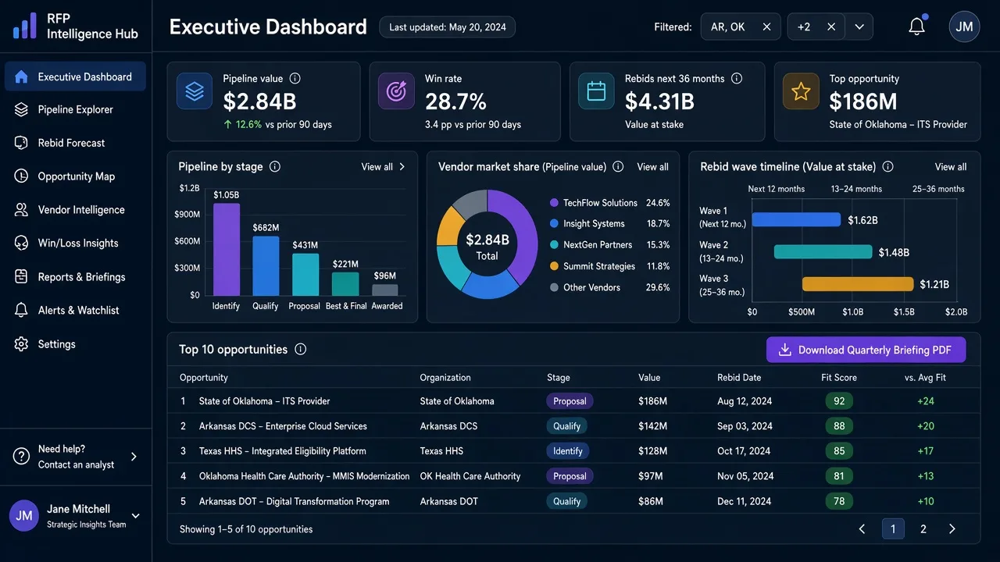

Consultants & consulting firms
Find pursuits, prepare proposals, and bring a cross-state view to the work you do with states. For bid pursuers →
StateWatchPro tracks RFPs out for bid, contract awards, who bid and who won, what states pay, legislation, program and policy manual changes, rule changes, and news, with the source behind every record. One place for procurement and policy across all 50 states.
Arkansas comes first; the rest of the states follow in batches.

Consultants, consulting firms, vendors, and the state government teams who want a sourced view of other states.
Find pursuits, prepare proposals, and bring a cross-state view to the work you do with states. For bid pursuers →
See who is bidding and winning, what states pay, and what is changing on contracts you hold. For contract holders →
Compare what other states are doing, follow trends across states, and use cost reporting to see what other states pay and how contracts are scoped. Insights are there to reuse and adapt in your own programs. State government use cases →
Built for consultants, consulting firms, and vendors who sell services to state governments.
Find opportunities early, size up competitors, and use price benchmarks to set pricing.
Protect and grow what you have: watch agency rule, legislation, program and policy manual changes that affect your contracts, renewal and rebid timing, competitor moves, and expansion ideas from other states.
One place for the signals that shape state contracting, instead of dozens of procurement portals, agency sites, and legislative trackers.
Opportunities out for bid, with amendments and deadlines.
What was awarded, to whom, and when.
Bidder lists and outcomes where states publish them.
What states have paid for comparable work.
Bills that can create, fund, or reshape programs.
Manual and policy changes that shift requirements.
Administrative rules as they're proposed and adopted.
State-level coverage that gives context to the documents.
Ask in plain language across every state you follow. The AI flags recurring pain points and good ideas that carry over from one state to another, with links back to the source documents.
One view of what's out for bid, what was just awarded, and how activity is trending, built for leaders who need the picture in minutes.
Vendor capabilities, who appears to have the edge in a program area, and the differentiators that showed up in past bids and awards.
See who bid and who won across solicitations, ranked so you can spot frequent competitors and likely teaming partners.
A running page of what's out for bid now and the emerging requirements showing up in new solicitations.
Past solicitations, amendments, Q&A, and award documents organized for reuse when you write your next response.
Hear about new opportunities and changes, and arrange the screen around the states and costs you follow.
A digest of each saved search, and an email when a new opportunity matches, brings those matches to you. Email digests →
Configurable alerts for new RFPs, amendments, deadlines, awards, renewals, and price or cost changes, delivered in-app and by email. Alerts →
Arrange widgets for your states, categories, pipeline, deadlines, trends, and cost comparisons, and save that view for yourself or your team. Customizable dashboards →
Arkansas comes first, with all 50 states on the rollout plan. Ask for a walkthrough or get on the early-access list.